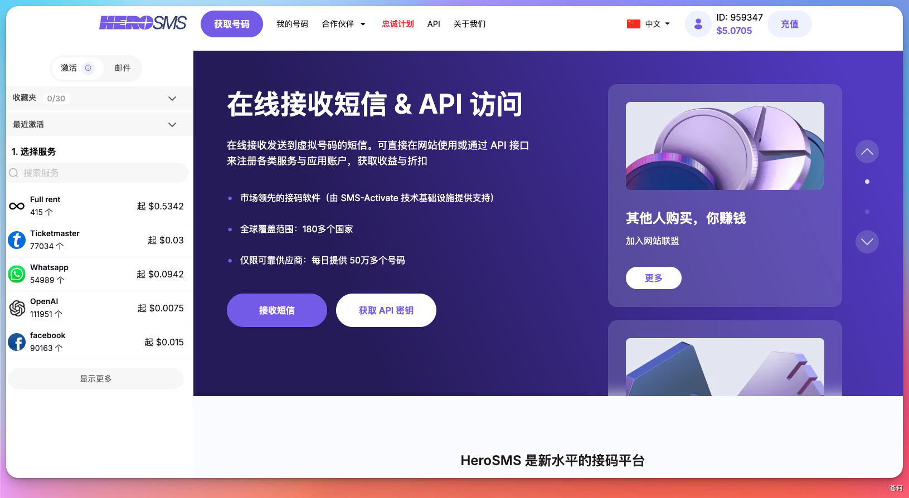
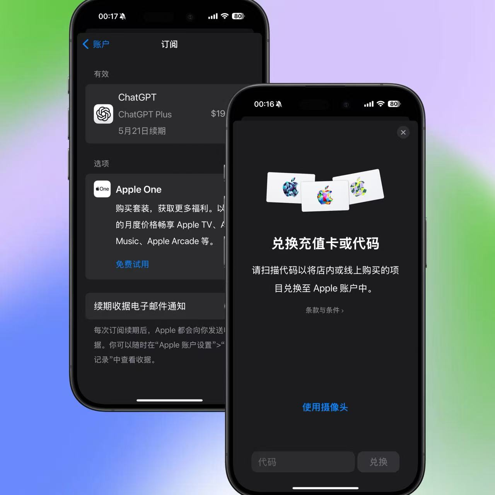
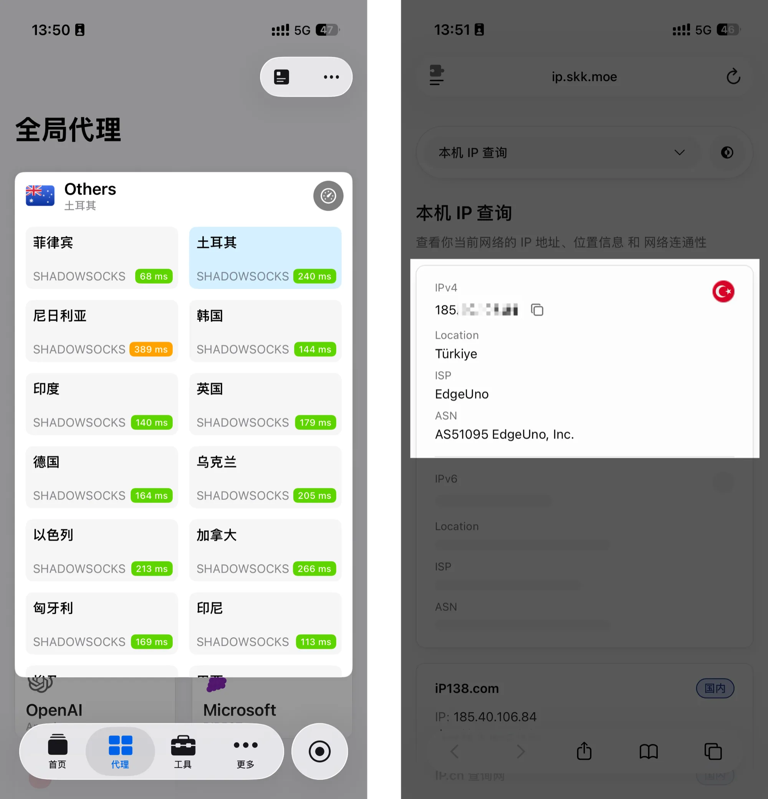
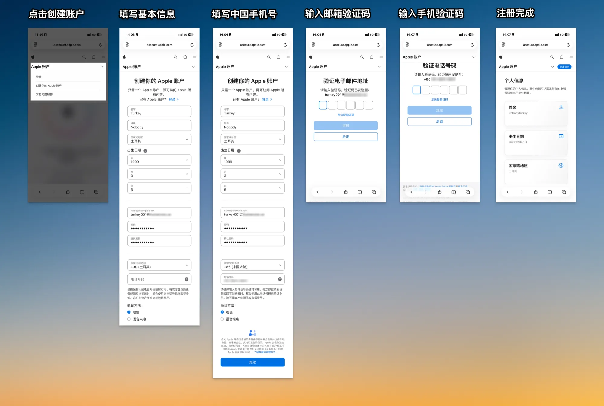
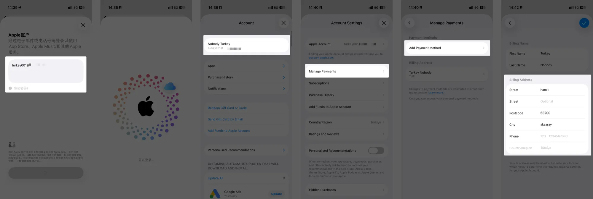
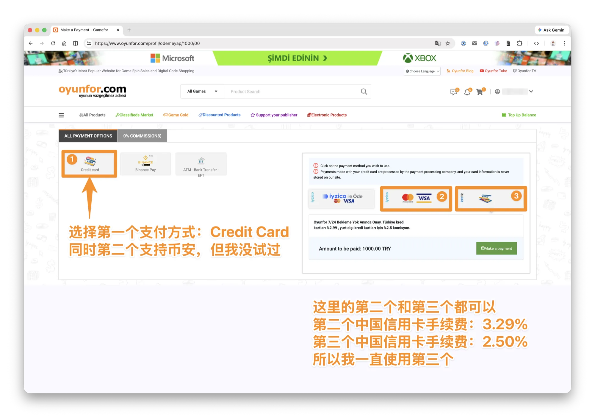

02 入门准备
订阅 ChatGPT Plus / Pro
免费版 ChatGPT 可以体验基础对话，但 Codex 功能（包括桌面 App、Cloud 任务、多 agent 并行）需要付费套餐才能稳定使用。
💡 最后核对 官方资料最后核对日期：2026-06-13。定价与套餐以 ChatGPT 定价页 和 Using Codex with your ChatGPT plan 为准。
为什么需要订阅
免费版 ChatGPT 可以体验基础对话，但 Codex 功能（包括桌面 App、Cloud 任务、多 agent 并行）需要付费套餐才能稳定使用。
| 套餐 | 月费（美元） | Codex 可用情况 |
|---|---|---|
| Free | 免费 | 仅限试用，额度极少 |
| Go | $8 | 在Codex中与Free没有区别 |
| Plus | $20 | 完整 Codex 访问，日常开发够用 |
| Pro 5x | $100 | Plus 的 5 倍额度，适合中高强度 |
| Pro 20x | $200 | Plus 的 20 倍额度，最大化额度 |
| Bussiness / Enterprise | 与销售团队联系 | 更高级的服务支持 |
对大多数个人开发者来说，Plus（$20/月）是性价比最高的起点。
前提条件
- 能正常访问国际网络（需要代理工具，这里不展开）
- 一个注册好的 ChatGPT / OpenAI 账号
- 支持国际支付的方式（详见下方）
如果还没有账号，需要先准备一个国外手机号用于接收注册验证码，可以使用专门的接码平台完成注册。
可以试试：https://hero-sms.com

方法一：苹果礼品卡（最稳定，推荐优先尝试）
适合已有 iOS 设备或愿意准备一台的用户。整个流程在国内支付宝内完成充值，不需要境外银行卡。
准备物品：
- 一台苹果设备（iPhone / iPad，可以是二手，能正常使用 App Store 即可）
- 已注册好的海外区 Apple ID（注册时选美国或新加坡，不需要绑定国内手机号）
- 国内支付宝（正常使用即可）
操作步骤：
- 在苹果设备上退出国内 Apple ID，登录准备好的海外区 Apple ID
- 打开支付宝，将定位切换为「美国旧金山」，支付宝会自动切换为国际版界面
- 在支付宝功能区找到「苹果礼品卡」，购买 $20 额度
- 购买成功后复制兑换码，打开 App Store，点击头像 → 「兑换礼品卡或代码」，粘贴充值
- 打开 ChatGPT App，登录账号，进入设置订阅 Plus，选择 Apple ID 余额支付
给Apple id充值礼品卡：

💡 提示 如果支付宝购买偶尔不稳定，可以通过代理访问苹果官网直接购买礼品卡，一次性多充值几个月额度，后续续订不需要重复操作。
方法二：土耳其区 App Store（第三方经验，价格优先）
如果你的核心诉求是降低长期订阅成本，可以参考低价区 App Store 的做法：单独准备一个土耳其区 Apple ID，通过该区礼品卡给 Apple ID 余额充值，再在 ChatGPT iOS App 里用 App Store 应用内购订阅。
❗ 来源与风险 本小节整理自第三方文章 App Store Price《没有海外信用卡也能稳定订阅 ChatGPT/Claude》，源文发布于 2026-03-06，作者/发布方为 App Store Price。下图也来自该文。如有问题，请联系作者删除 这不是 OpenAI 或 Apple 官方订阅说明。跨区账号、礼品卡余额、汇率、App Store 定价和风控策略都可能变化，存在充值失败、订阅失败、余额无法退款、账号触发安全验证或后续续费不稳定等风险。正式操作前建议先小额验证，不要把主 Apple ID 频繁切区。

图源：App Store Price 文章。本小节后续截图除特别说明外，均整理自同一篇文章。价格、排名和汇率只代表源文截图时的状态，实际付款前一定以 App Store 结算页显示为准。
适合谁：
- 已经有 iPhone / iPad，愿意单独维护一个海外区 Apple ID。
- 能接受第三方礼品卡渠道的不确定性。
- 更看重订阅价格，而不是最省心的官方直连支付体验。
详细流程
第一步：核对当前低价区
先打开 App Store Price 的 ChatGPT 价格页，选择 ChatGPT Plus 月付项，看当前各地区价格。源文截图显示土耳其区价格较低，但低价区会随 App Store 定价、汇率和税费变化，操作前必须重新核对。
第二步：确认网络节点与账号地区一致
源文建议先准备土耳其节点，并在 IP 检测页面确认当前出口地区。核心原则是：注册 Apple ID、填写地区信息、登录 App Store 时，地区信息要尽量保持一致，减少触发安全验证的概率。

第三步：注册土耳其区 Apple ID
打开 account.apple.com 注册新的 Apple ID。注册时选择土耳其地区，按页面提示填写邮箱、手机号和验证码。源文说明旧的 appleid.apple.com 入口也可用，但 Apple 当前页面名称可能会变化，以实际页面为准。

❌ 警告 建议为这条订阅路线单独准备 Apple ID，不要频繁切换自己的主力 Apple ID 地区。跨区账号可能涉及 Apple 当前服务条款、账单地址真实性和后续风控，请自行确认能接受这些风险。
第四步：补齐 Payment Address
注册完成后，在 Apple 账号或 iPhone / iPad 的 App Store 账户设置里补齐 Payment Address。即使不绑定土耳其本地银行卡，Apple 也可能在购买或兑换时要求补充账单地址。

第五步：购买土耳其区 App Store 礼品卡
源文提到土耳其区礼品卡可以通过淘宝、闲鱼等渠道购买，也可以在土耳其数字商品平台购买。它以 oyunfor.com 为示例：注册并登录后，在站内找到 App Store 礼品卡，选择所需面值并加入购物车。

❗ 注意 CodexGuide 不推荐具体商家，也不保证任何第三方礼品卡渠道的稳定性。礼品卡一旦兑换通常不可退款，建议先小额测试。
第六步：选择支付方式并付款
源文示例中，Oyunfor 支持信用卡和 Binance Pay。信用卡页面里会出现不同支付通道，部分通道可能要求土耳其本地支付方式，源文选择了可用的国际卡通道。截图中的示例为 1000 土耳其里拉礼品卡，并叠加约 2.5% 手续费，实际手续费以付款页为准。

随后进入支付页，填写银行卡信息并确认付款。源文里的银行卡信息已经做了遮挡；你自己操作时不要把银行卡、验证码、礼品卡兑换码截图发给任何人。

如果银行或支付通道要求 3D Secure / 短信验证码，按页面提示完成验证。

第七步：收取并兑换礼品卡
付款成功后，礼品卡通常会通过邮件发送。源文的邮件截图中露出了兑换码，所以这里不再放图。拿到兑换码后，打开 App Store，点击头像，进入「兑换礼品卡或代码」，把土耳其区礼品卡兑换到同一个土耳其区 Apple ID。

第八步：在 ChatGPT App 内购买订阅
在 iPhone / iPad 的 App Store 登录这个土耳其区 Apple ID，用它下载 ChatGPT App。如果之前 ChatGPT 是用其他地区 Apple ID 下载的，源文建议先删除再用当前 Apple ID 重新下载。打开 ChatGPT App 后登录你的 ChatGPT 账号，进入订阅页，选择 Plus / Pro，用 Apple ID 余额完成 App Store 应用内购。
后续如果开启自动续费，需要保证这个 Apple ID 余额足够；如果余额不足，续费可能失败。
注意事项：
- 不要只看网页截图里的价格，最终价格以 App Store 付款页为准。
- 礼品卡有区域限制，土耳其区礼品卡通常不能给其他区 Apple ID 充值。
- 礼品卡渠道质量差异很大，避免一次性充值太多。
- 如果后续要续费，需要保证 Apple ID 余额足够，或者提前补充礼品卡余额。
- 如果你更在意稳定和售后，优先用前面的美国 / 新加坡区礼品卡方案。
方法三：安卓 Google Play（备选）
逻辑与苹果礼品卡类似：在安卓设备上切换到对应 Google 账号区域，通过 Google Play 购买礼品卡充值后订阅。有部分用户反映这条路可行，但实测稳定性不如苹果礼品卡，可作为备选方案。
常见问题
Q：订阅后 Codex 额度够用吗？
Plus 按 token 计费（2026 年 4 月起），日常开发任务普通使用量通常可以撑一整个月。如果额度用完，可以单独购买额外额度，也可以等下月重置。
Q：Plus 和 Pro 区别大吗？
Pro 的 Codex 使用额度是 Plus 的 5 倍，适合重度用户或需要大量并行任务的场景。普通开发者先从 Plus 开始，不够用再升级。
Q：可以用现有手机而不买二手设备吗？
可以。如果你的设备能正常使用海外区 Apple ID，不需要专门买二手。建议不要在自己常用的国内账号设备上频繁切换 ID，长期使用建议准备一台专用设备。
订阅后验证
登录 ChatGPT App 或网页端，在账号设置里确认套餐显示为 Plus 或以上，然后进入 Codex 入口检查功能是否正常可用。